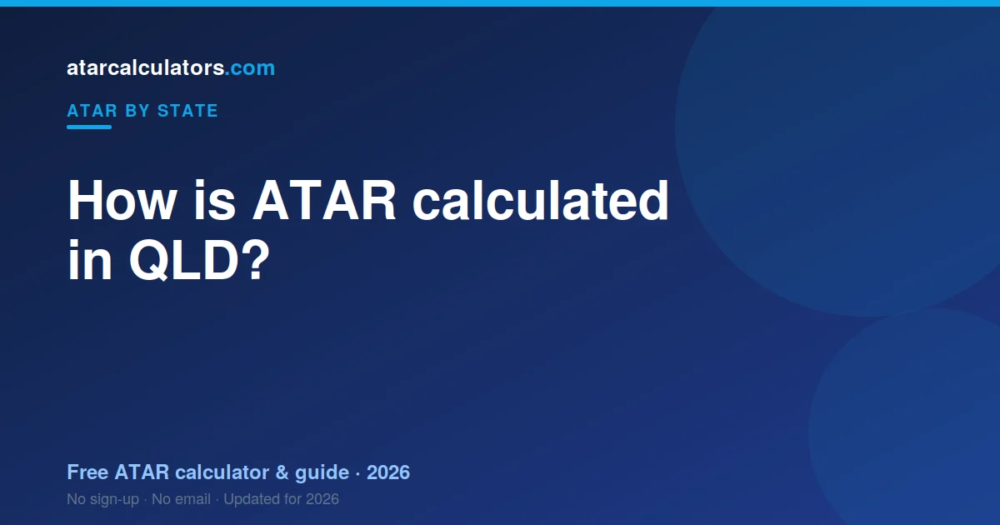

In Queensland, your ATAR is worked out by QTAC from your scaled QCE subject results. QTAC scales each subject result, takes your best five, and ranks that total against your age group to give an ATAR from 0.00 to 99.95. QCAA sets the subjects and runs the assessment; QTAC turns those results into your ATAR. Queensland moved from the OP system to the ATAR in 2020.
Key takeaways
- Your QLD ATAR is a rank from 0.00 to 99.95, not an average of your results.
- It is built from your best five scaled subject results.
- You must complete an English subject to be eligible, though it need not be in your best five.
- QTAC scales your results and works out your ATAR. QCAA sets and runs the assessment.
- Each General subject result is mostly internal assessment plus an external exam.
- Queensland switched from OP to ATAR in 2020.
- The same ATAR is used by universities across Australia, not just Queensland.

A rank, not a mark
The most important thing to know is that your ATAR is a rank. An ATAR of 85 does not mean you scored 85%. It means you finished ahead of about 85% of your age group.
Because it is a rank, it lets universities compare students who took completely different subjects. That is the whole point of the ATAR.
What the QCE is
The QCE is the Queensland Certificate of Education, the Year 12 qualification in Queensland. Subjects are set and assessed by QCAA, the Queensland Curriculum and Assessment Authority.
You finish with a result in each subject. Those results are the raw material for your ATAR, but they are not your ATAR. That comes next.
How your subject result is built
For a General subject, most of your result comes from internal assessments across the year, set at your school and confirmed by QCAA. The rest comes from an external exam, written and marked by QCAA.
For most subjects the external exam is worth about a quarter of your result. For maths and science subjects it is worth half. So your work across the year carries real weight, long before the exam.
How QTAC scaling works
Once you have your subject results, QTAC scales them. Scaling adjusts each subject so that the same result means the same thing across subjects.
A subject scales up when the students taking it are strong across all their subjects. It scales down when the group is broader. Your position within the subject never changes — scaling only changes how the result counts towards your ATAR.
Your best five results form your ATAR
QTAC takes your best five scaled results and combines them. This can be five General subjects, or a mix that includes an Applied subject or a VET qualification, within set limits.
Your strongest five do all the work. Anything beyond five does not count, so a spare subject is a useful safety net rather than a boost.
The English requirement
To be eligible for an ATAR in Queensland, you must complete an English subject and meet a set literacy standard. This applies to everyone.
However, your English result only counts towards your ATAR if it is among your best five. So English is required for eligibility, but it does not have to be one of your top five results.
A worked example
Say you take English, Maths Methods, Biology, Business and Physical Education. QTAC scales each result and takes your best five.
It combines them into a total, then compares that total with every other student’s. If it sits higher than 88% of them, your ATAR is about 88.00. Your strongest results do the heavy lifting.
Who does what in Queensland
Two bodies are involved, and it helps to keep them straight. QCAA runs the QCE: it sets the subjects, runs the assessment, and gives you your results. QTAC takes those results, scales them, and works out your ATAR.
So QCAA gives you your QCE. QTAC gives you your ATAR. We cover QTAC in detail in QTAC explained.
From OP to ATAR
Queensland used to use the OP, or Overall Position, a band from 1 to 25. It moved to the ATAR in 2020, bringing it into line with the rest of the country.
So if an older sibling talks about their OP, that system is gone. Every Queensland student now receives an ATAR. See ATAR vs OP vs ENTER for the history.
Estimate your QLD ATAR
The clearest way to see all this is to try it. Our QLD ATAR calculator applies scaling to your subject results and gives you an estimated ATAR.
An estimate is not your official result, which only QTAC can give. It shows you where you stand now, so you can set a realistic target for the rest of Year 12.
The structure of a General subject
Most students building an ATAR take General subjects. Each one is assessed in four parts: three internal assessments across the year, set at your school, and one external exam at the end, set by QCAA.
So your result in a General subject is built mostly across the year, with the exam as the final piece. This means the work you do in Year 12, long before the exam, carries real weight towards your result.
How internal assessment is quality-assured
Queensland does not rank-moderate internal marks the way some states do. Instead, your school marks your internal assessments against QCAA’s published standards, and QCAA reviews and confirms that marking to keep it consistent across the state.
So your internal result reflects your work against a set standard, not just your position in your class. Strong, consistent internal assessment is one of the most reliable ways to build a good subject result.
The external exam and its weighting
Each General subject ends with an external exam, written and marked by QCAA. For most subjects it counts for about a quarter of your result. For maths and science subjects, it counts for half.
So exam preparation matters, and it matters most in maths and science, where the exam carries more weight. Past papers under timed conditions are the most reliable way to get ready.
A fuller worked example, with five results
Say a student finishes with these subject results, which QTAC then scales: English 82, Maths Methods 85, Chemistry 88, Biology 80 and Business 78.
| Subject | Result | Counts in your best 5? |
|---|---|---|
| Chemistry | 88 | Yes |
| Maths Methods | 85 | Yes |
| English | 82 | Yes (and meets eligibility) |
| Biology | 80 | Yes |
| Business | 78 | Yes (fifth result) |
QTAC scales each result, takes the best five, and combines them into a total. That total is ranked against every student to give the ATAR.
Applied subjects and VET in your ATAR
Your best five results do not all have to be General subjects. Within set limits, you can include one Applied subject or a completed VET qualification among your five.
This gives you flexibility. A student who is strong in an applied or vocational area can have that count towards their ATAR, alongside their General subjects. The rules cap how many non-General results can count, so check the details for your combination.
Subject results are not your ATAR
Students often confuse a subject result with the ATAR. They are different. A subject result describes your performance in one subject. Your ATAR is a statewide rank, from 0.00 to 99.95, built from your best five scaled results.
You can have solid subject results and an ATAR that surprises you, because the ATAR depends on scaling and on how everyone else did. Subject results describe subjects; the ATAR ranks students.
Scaling in numbers
Scaling can move a result up or down. A result in a subject with a strong cohort might scale up, while the same result in a broad-entry subject might scale down. QTAC does this so every subject can be compared fairly.
This is why two students with the same raw results can end up with different ATARs. What matters is not just your result, but how the subject scales and how you performed within it.
Why you cannot calculate it exactly yourself
There is no formula you can run at home for your exact ATAR. It depends on how every other student in Queensland performs, and on the exact scaling for that year. Both are only known once all results are finalised.
This is why calculators give an estimate: they apply scaling to your results, which is close but not the final figure. See how accurate ATAR calculators are.
How many subjects should you take?
Your ATAR is built from your best five scaled results, so you need at least five eligible subjects, including an English subject for eligibility. Most students take six, which is a smart safety net.
An extra subject means one poor result can drop out of your best five without sinking your ATAR. It costs some effort across the year, but the protection it gives your rank is usually worth it.
From OP to ATAR: what changed
The switch changed how finely students are ranked. The OP had just 25 bands, while the ATAR runs from 0.00 to 99.95 in small steps, so it separates students far more precisely than the old system did.
For you, this means small differences in your results can matter more than they once would have. There is also no exact one-to-one conversion between an old OP and an ATAR, so if you see an OP-to-ATAR table, treat it as a rough guide only. See ATAR vs OP vs ENTER for the full story.
Turning your estimate into a plan
Once you understand how the ATAR is built, an estimate becomes a planning tool. Enter your current results, see your estimated rank, and compare it with the cutoff for your course. That gap is your target for the rest of the year.
Re-run the estimate as real results come in. As they replace predictions, the number sharpens, and you can see which subjects are moving your rank the most.
What this means for choosing subjects
Put together, the process points to a simple strategy. Take an English you can do well in, since it is required for eligibility. Add subjects you are strong in, because your best five carry your ATAR. Include a high-scaling subject only if you can score well in it.
Then take a sixth subject as a buffer, so one weak result can drop out. Do that, and the machinery of scaling and your best five works in your favour rather than against you.
Common questions
How many subjects do you need for a QLD ATAR?
Your ATAR is built from your best five scaled results. You need at least five eligible subjects, which can be five General subjects or a mix including an Applied subject or a VET qualification, within set limits.
Is English compulsory for the QLD ATAR?
You must complete an English subject and meet a literacy standard to be eligible for an ATAR. However, your English result only counts towards your ATAR if it is among your best five.
Who calculates the QLD ATAR?
QTAC, the Queensland Tertiary Admissions Centre, calculates the QLD ATAR. QCAA sets the subjects and runs the assessment, and QTAC scales those results and works out your ATAR.
How does QCE scaling work?
QTAC scales each subject based on how strong the students taking it are across all their subjects. A strong cohort scales a subject up; a broader one scales it down. Your position within the subject never changes.
What is the maximum QLD ATAR?
The highest possible ATAR is 99.95, the same across Australia. Ranks below 30.00 are usually reported as “less than 30”.
How is internal assessment marked in Queensland?
Your school marks internal assessments against QCAA’s published standards, and QCAA reviews and confirms that marking for consistency. Queensland does not rank-moderate internal marks the way some other states do.
Can Applied subjects or VET count towards my QLD ATAR?
Yes, within set limits. Your best five results can include one Applied subject or a completed VET qualification, alongside your General subjects, so a strong vocational area can count towards your ATAR.